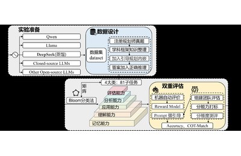

Can AI Reason Like an Urban Planner? Benchmarking Large Language Models Against Professional Judgment
Yijie Deng, He Zhu, Wen Wang, Junyou Su, Minxin Chen, Wenjia Zhang
arXiv, 2026
paper / pdf
Yijie Deng, He Zhu, Wen Wang, Junyou Su, Minxin Chen, Wenjia Zhang
arXiv, 2026
paper / pdf
UPBench evaluates whether LLMs can reason with professional planning judgment across planning knowledge and cognitive levels.